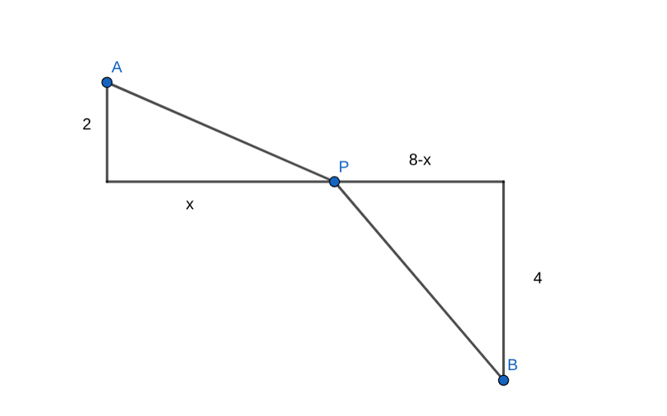

函数入门
简而言之, 这部分的内容是 "学导数以前的函数"
函数的定义
定义
函数 (function) 是 一个实数集合, 到另一个实数集合, 的对应关系, 而且每个数对应的数是 存在且唯一 的
具体的: 对于 非空 实数集合 \(A,B\), 对任意 \(x\in A\), 按照某种对应关系 \(f\), 都有 唯一 的 \(y\in B\) 与它对应, 就称 \(f:A\to B\) 为从 \(A\) 到 \(B\) 的一个函数, 记作:
这里 \(x\) 叫做 自变量, \(x\) 的取值范围 \(A\) 叫做函数的 定义域
对应的 \(y\) 叫做函数值, 函数值的集合 \(\{f(x)|x\in A\}\) 叫做 值域
简而言之, 函数是在用严谨的数学语言描述一种 "关系".
拓展
函数的对应必须是 实数到实数
但数学中也存在不少实数以外的对象. 比如我对集合 \(S\), 定义 \(f(S)\) 代表 \(S\) 中的元素个数, 比如 \(f(\{1,2,3\})=3\), 这个 \(f\) 就不能称作 "函数" 了. 同样, 假如对于图形 \(G\), 定义 \(f(G)\) 代表 \(G\) 的面积, \(f\) 也不能叫做 "函数"
有一个比函数更大的概念包含这些东西, 叫做 映射
当然这只是作为知识拓展, 了解一下.
不过对于高中范围, 我们要清楚的知道, 刚才的两个例子, 不能叫函数
注意
函数从被定义开始, 就隐含了高中数学常考的许多坑
首先是 定义域: 看到函数, 一定要标出定义域! 比如 \(f(x)=\frac{1}{x}\), 要求 \(x\neq 0;\) \(f(x)=\sqrt{x}\), 要求 \(x\ge 0;\) 等等. 函数一定不能抛开定义域去讨论.
然后是 值域: 值域就是上面的 \(B\) 吗? 并不是. 只是说所有的 \(f(x)\) 都被包含在 \(B\) 里面, 但不一定完全覆盖. 比如 \(f:R\to R\), \(f(x)=x^2\), 不能覆盖 \(B=R\) 中的所有数, 只覆盖了正的和 \(0\), 没有负的.
所以 值域是 \(B\) 的子集, 但不一定就是 \(B\) 本身. 如果要求值域, 需要对函数的取值范围有精确的把握才行.
函数研究: 研究什么?
现在我们知道什么是函数了.
那么数学上, 一般研究函数的哪些方面, 又有什么用呢?
不妨先看一些例子.
我们初中就接触到了, 表示直线的函数: 可以写成 \(f(x)=kx+b\)
根据初中知识: 我们把所有满足 \(y=f(x)\) 的点都画出来的话, 这些 \((x,y)\) 会形成一个直线
诶! 这里提到一个概念: 图像
定义: 函数的图像
函数的图像, 就是点集 \(\{(x,y)|y=f(x)\}\). 将其画在坐标轴上, 会形成一个图像.
函数会呈现出什么样的图像, 是一个重要的研究方面. 作为图像, 它就具有 几何性质. 所以函数的图像天然具有 数形结合 的性质. 去解决函数问题的时候, 要做到 心中有图像.
针对图像, 可以延伸出许多问题, 比如:
- 图像是什么形状? 直的还是弯的? 直的话, 有多倾斜? 弯的话, 有多弯?
- 图像会怎样变化? 比如哪里是上升的, 哪里是下降的? 有没有最高和最低的位置? 是不是在向谁靠近, 还是会一直到达无穷远?
- 图像是否具有对称性或者周期性?
- 如果我们有两个图像, 它们有没有交点? 或者, 图像有没有零点 (和x轴的交点)?
- 等等
数学家们用更严格的定义, 描述了这些问题
函数研究: 函数的性质
增减性
描述上升或下降. 假设 \(f(x)\) 在区间 \((a,b)\) 上有定义, 且:
则 \(f(x)\) 在区间 \((a,b)\) 上 单调递增. 若改成 \(f(x_1)\gt f(x_2)\), 则为 单调递减. 常简称为 "增的", "减的"
最值
假如某个 \(x_0\) 满足:
则 \(x_0\) 为 最大值点, \(f(x_0)\) 为最大值. 最小值同理.
零点
假如某个 \(x_0\) 满足 \(f(x_0)=0\), 则称 \(x_0\) 为函数 \(f(x)\) 的 零点.
注意: 零点是一个 "数", 而不是一个 "点". 函数里面都是如此, 刚才提到 "最小值点", 和以后会学到的 "极值点" 之类的, 都是一个 "数" 而不是 "点"
奇偶性
描述关于原点或坐标轴的对称性.
- 奇函数:
- 偶函数:
奇函数的图像关于 原点中心对称 , 偶函数的图像关于 y轴对称
注意: 讨论奇偶性, 必须要 定义域关于 \(0\) 对称. 即, 如果 \(x\) 在定义域中, \(-x\) 也一定要在定义域中.
周期性
假如存在 \(T>0\),
则 \(T\) 为 \(f(x)\) 的一个 周期
有周期性的函数, 其定义域必须为 全部实数
可以发现如果 \(T\) 是周期, 那么 \(2T, 3T, 4T\ldots\) 都是周期
所以我们常常研究 最小正周期, 由它可以生成出所有的周期
周期性与对称性的联系
学到后面会发现, 周期性其实是一种更强的对称性, 他们之间是存在联系的
可以从一些例子中看到联系:
- 若 \(f(x)\) 关于 \(x=a,x=b\) 都轴对称, 则 \(f(x)\) 有周期 \(T=2|a-b|\)
- 若 \(f(x)\) 关于 \((a,y),(b,y)\) 都中心对称, 则 \(f(x)\) 有周期 \(T=2|a-b|\)
- 若 \(f(x)\) 关于 \(x=a\) 轴对称, \((b,y)\) 中心对称, 则 \(f(x)\) 有周期 \(T=4|a-b|\)
可以通过来回倒腾, 证明这一点.
比如第一个, 证明: \(f(x)=f(2a-x)=f(2b-(2a-x))=f((2b-2a)+x)\), 所以 \(|2b-2a|\) 是一个周期
函数研究: 我的手段?
通常来说, 我们有: 代数 和 几何 两种手段
几何的, 自然就是画图, 然后观察
代数的, 我们已经学过的方法有:
-
代数变形, 比如拆括号, 因式分解
-
解方程, 一次的, 二次的, 各种
-
不等式: 基本不等式, 柯西不等式, 各种
具体该怎么打出一套操作, 就多练习吧
练练手
我们熟悉的函数: 怎么处理?
首先, 我们熟悉什么函数?
-
多项式
-
指数函数, 对数函数
-
三角函数
-
...
多项式
一次的: 很简单, 随便解解方程之类的就行
二次的
-
求根公式
-
韦达定理
-
图形直观: 对称轴, 增减性, ...
总的来说, 二次的我们也很熟悉
带根号的
-
尝试平方, 消掉根号
-
构造几何意义: \(\sqrt{a^2+b^2}\) 是相差 \((a,b)\) 的两个点的距离
例题
- 解方程: \(\sqrt{x+18}-\sqrt{x+9}=1\)
平方, 就只剩一个根号, 然后移项, 再平方, 这个根号也没了, 最后解出 \(x=7\)
- 实数 \(x\in [0,8]\), 求 \(\sqrt{4+x^2}+\sqrt{(8-x)^2+16}\) 的最小值

构造几何意义: \(A(0,2),B(8,-4)\), 动点 \(P(x,0)\), 如图, 这个东西就是 \(AP+BP\)
显然最小值就是 \(AB=10\)
三次的
我们后面会学习求导, 从而研究三次函数的一些性质
在此之前, 除非能因式分解, 不然可不好做
更高次的
没辙, 除非结构特别明显
比如 \(y=x^4-1\) 你可以一秒想象出它长什么样
但如果没啥规律, 那你就一点办法都没有
指数, 对数
处理技巧: 开个 \(\log\), 把指数 "打下来"
比如: 假设 \(0\lt x\lt y\), 如何比较 \(x^y\) 和 \(y^x\) 谁大?
-
两边取 \(\ln\) 变成: 比较 \(y\ln x\) 与 \(x\ln y\)
-
同除 \(xy\), 变成比较: \(\dfrac{\ln x}{x}\) 与 \(\dfrac{\ln y}{y}\)
-
配合求导, 这件事情就比较容易了, 可以知道的是: 如果 \(e\lt x\lt y\), 那么是 \(x^y\) 更大
此外, 作为导数大题经常涉及的对象, 后面讲求导的时候会接着讲怎么处理指数对数
三角函数
技巧: 三角恒等式
-
诱导公式, 和差角, 二倍角 ...
-
积化和差, 和差化积
-
辅助角公式
技巧: 换元
对于 \(A\sin (\omega x+\varphi)\) 这种函数:
-
比如我们要求满足某些条件的 \(x\) 的集合
-
我们可以令 \(t=\omega x+\varphi\), 对 \(t\) 求这个解集
-
然后把它变回 \(x\): \(x=\frac{t-\varphi}{\omega}\)
-
这样就能得到 \(x\) 的解集了
图形的变换
三角函数题里经常出现图形变换, 尤其是左右平移, 左右伸缩, 这样的
见 这里